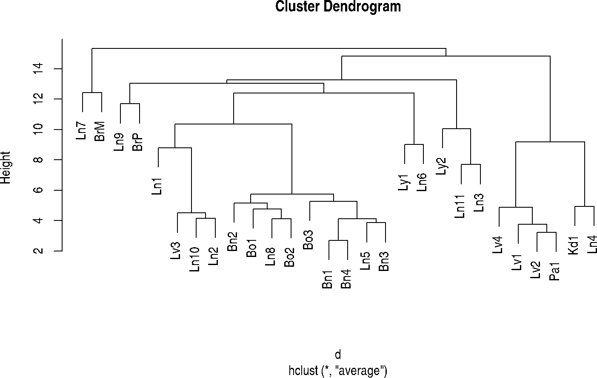
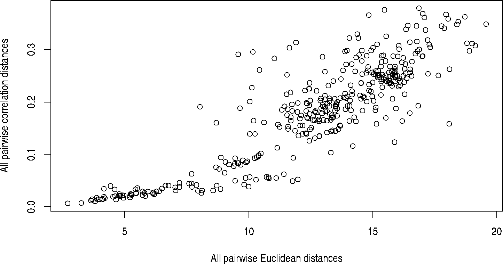
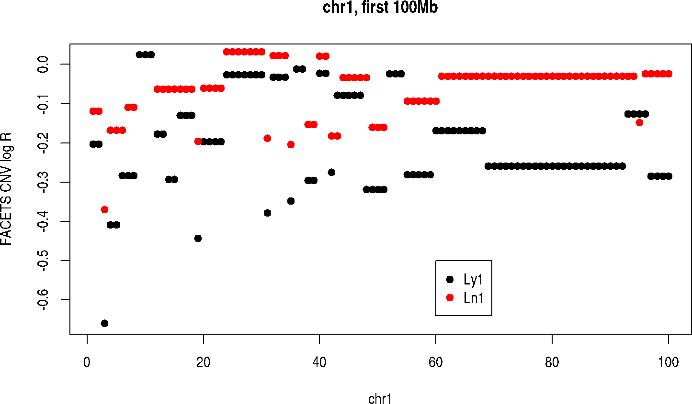
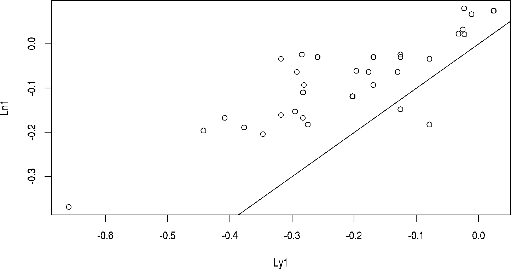
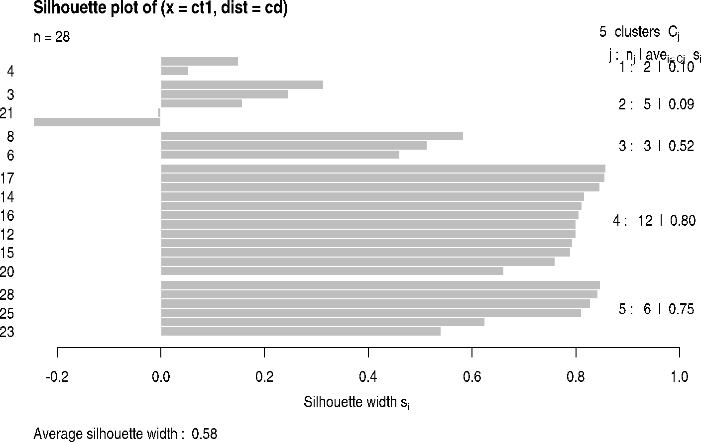
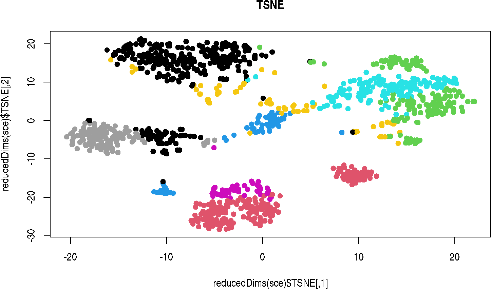
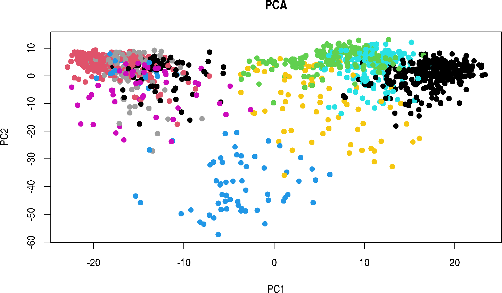
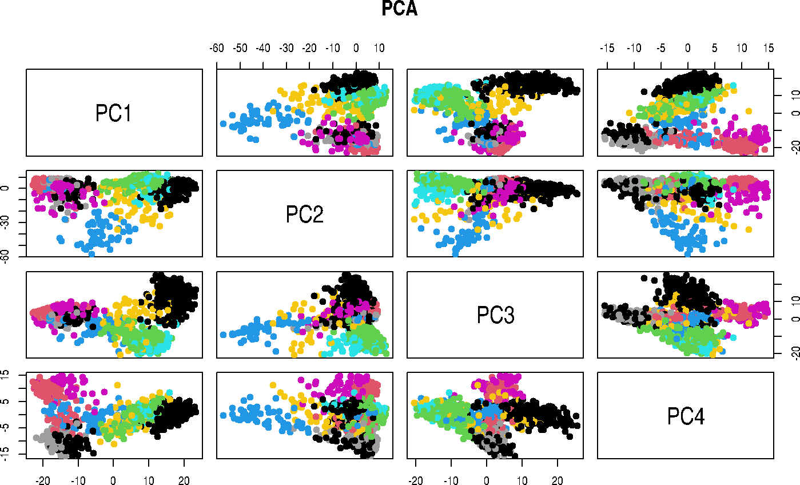
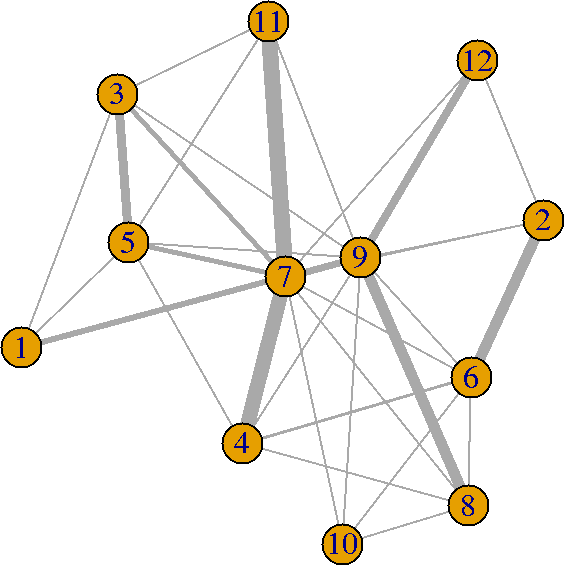

vignettes/distplus.Rmd
distplus.RmdWe’ll examine data distributed with a 2021 Genome Biology paper from the Gabor Marth lab.
Clinical sequence of interventions.
Event sequence.
28 tumors were sampled and sequenced in a rapid autopsy procedure. Copy number variation was assessed using FACETS.
The tissues from which tumors were taken are Br (Breast), Bo (Bone), Bn (Brain), Ln (Lung), Lv (Liver), Pa (Pancreas), Ly (Lymph nodes), Kd (Kidney)
The (vertical) ordering of tissues is chosen to exemplify certain similarities.
For example the block of blue on chr10 is seen for only three samples. This is an indication of a deletion.
This code is lightly modified from a script distributed at https://github.com/xiaomengh/tumor-evo-rapid-autopsy.git.
suppressPackageStartupMessages({
library(csamaDist)
library(bioDist)
library(bluster)
library(cluster)
library(scater)
library(scran)
library(scRNAseq)
library(scuttle)
})
data(cnv_log_R)
data = cnv_log_R
samples = c('Ln7','Ln9','Ln1','BrM','BrP',
'Ln11','Ly2','Ln3',
'Bo3','Ln10','Bo1','Ln8','Lv3','Ln5','Bo2','Bn2','Bn1','Bn3','Bn4','Ln2',
'Ly1','Ln6',
'Kd1','Ln4','Lv4','Lv2','Lv1','Pa1')
rownames(data) = samples
d = dist(data, method="euclidean")
fit = hclust(d, method="average")
# the following line changes the order of the samples to produce the Fig.S3B but doesn't change the phylogenetic relationship
fit$order = c(1,4,2,5,3,13,10,20,16,11,12,15,9,17,19,14,18,21,22,7,6,8,25,27,26,28,23,24)
plot(fit)
cd = cor.dist(cnv_log_R) # from bioDist
ed = dist(cnv_log_R)
plot(as.numeric(ed), as.numeric(cd), xlab="All pairwise Euclidean distances", ylab="All pairwise correlation distances")
For a given correlation distance value, there can be wide variation in euclidean distance, and vice versa.
Open question: What distance metric is most relevant for biological interpretation of CNV?
We’ll have a look at the first 100Mb on chr1.
plot(cnv_log_R["Ly1",1:100],pch=19, main="chr1, first 100Mb", ylab="FACETS CNV log R", xlab="chr1")
points(cnv_log_R["Ln1",1:100], col="red",pch=19)
legend(60, -.5, pch=19, col=c("black", "red"), legend=c("Ly1", "Ln1"))
#cor(cnv_log_R["Ly1", 1:100], cnv_log_R["Ln1", 1:100])
edist = function(x,y) sqrt(sum((x-y)^2))
edist(cnv_log_R["Ly1", 1:100], cnv_log_R["Ln1", 1:100])## [1] 1.685992
From ?silhouette with the cluster library:
For each observation i, the _silhouette width_ s(i) is defined as follows:
Put a(i) = average dissimilarity between i and all other points of
the cluster to which i belongs (if i is the _only_ observation in
its cluster, s(i) := 0 without further calculations). For all
_other_ clusters C, put d(i,C) = average dissimilarity of i to all
observations of C. The smallest of these d(i,C) is b(i) := \min_C
d(i,C), and can be seen as the dissimilarity between i and its
"neighbor" cluster, i.e., the nearest one to which it does _not_
belong. Finally,
s(i) := ( b(i) - a(i) ) / max( a(i), b(i) ).
'silhouette.default()' is now based on C code donated by Romain
Francois (the R version being still available as
'cluster:::silhouette.default.R').
Observations with a large s(i) (almost 1) are very well clustered,
a small s(i) (around 0) means that the observation lies between
two clusters, and observations with a negative s(i) are probably
placed in the wrong cluster.
ct1 = cutree(fit2, h=.3)
c2 = cnv_log_R
rownames(c2) = paste(rownames(c2), as.numeric(ct1))
sil = silhouette(ct1, cd)
plot(sil)
This code is taken verbatim from the bluster “diagnostics” vignette.
[Grun 2016] (https://www.sciencedirect.com/science/article/pii/S1934590916300947) define an algorithm, StemID, that infers candidate multipotent cell populations in the human pancreas.
library(scRNAseq)
sce <- GrunPancreasData()## snapshotDate(): 2022-04-26## see ?scRNAseq and browseVignettes('scRNAseq') for documentation## loading from cache## snapshotDate(): 2022-04-26## see ?scRNAseq and browseVignettes('scRNAseq') for documentation## loading from cache
# Quality control to remove bad cells.
library(scuttle)
qcstats <- perCellQCMetrics(sce)
qcfilter <- quickPerCellQC(qcstats, sub.fields="altexps_ERCC_percent")## Warning in .get_med_and_mad(metric, batch = batch, subset = subset,
## share.medians = share.medians, : missing values ignored during outlier detection
sce <- sce[,!qcfilter$discard]
# Normalization by library size.
sce <- logNormCounts(sce)
# Feature selection.
library(scran)
dec <- modelGeneVar(sce)
hvgs <- getTopHVGs(dec, n=1000)
# Dimensionality reduction.
set.seed(1000)
library(scater)
sce <- runPCA(sce, ncomponents=20, subset_row=hvgs)
sce <- runTSNE(sce, subset_row=hvgs)From bluster’s makeSNNGraph help page
The 'makeSNNGraph' function builds a shared nearest-neighbour
graph using observations as nodes. For each observation, its 'k'
nearest neighbours are identified using the 'findKNN' function,
based on distances between their expression profiles (Euclidean by
default). An edge is drawn between all pairs of observations that
share at least one neighbour, weighted by the characteristics of
the shared nearest neighbors - see "Weighting Schemes" below.
The aim is to use the SNN graph to perform clustering of
observations via community detection algorithms in the 'igraph'
package. This is faster and more memory efficient than
hierarchical clustering for large numbers of observations. In
particular, it avoids the need to construct a distance matrix for
all pairs of observations. Only the identities of nearest
neighbours are required, which can be obtained quickly with
methods in the 'BiocNeighbors' package.
library(bluster)
mat <- reducedDim(sce)
clust.info <- clusterRows(mat, NNGraphParam(), full=TRUE)
clusters <- clust.info$clusters
table(clusters)## clusters
## 1 2 3 4 5 6 7 8 9 10 11 12
## 285 171 161 59 174 49 70 137 69 65 28 23
plot(reducedDims(sce)$TSNE, col=clusters, pch=19, main="TSNE")
plot(reducedDims(sce)$PCA, col=clusters, pch=19, main="PCA")
pairs(reducedDims(sce)$PCA[,1:4], col=clusters, pch=19, main="PCA")
g <- clust.info$objects$graph
ratio <- pairwiseModularity(g, clusters, as.ratio=TRUE)
cluster.gr <- igraph::graph_from_adjacency_matrix(log2(ratio+1),
mode="upper", weighted=TRUE, diag=FALSE)
# Increasing the weight to increase the visibility of the lines.
set.seed(1100101)
plot(cluster.gr, edge.width=igraph::E(cluster.gr)$weight*5,
layout=igraph::layout_with_lgl)